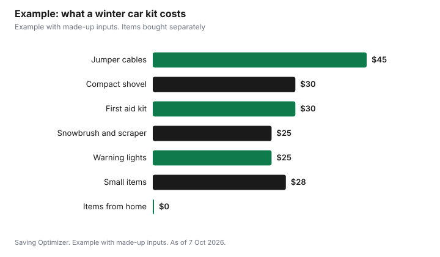

Transportation · Canada
How to Build a Winter Driving Emergency Kit in Canada Without Overpacking Junk
A good winter driving emergency kit for Canada fits in one bin or duffel bag and covers four things: staying warm, being seen, getting unstuck, and calling for help. Start with the Government of Canada's emergency car kit list: food that won't spoil, water, a blanket, extra clothing and footwear, a first aid kit, a small shovel, a scraper and snowbrush, a flashlight, a whistle and a candle in a deep can with matches. In the trunk, add sand or non-clumping cat litter, washer fluid, jumper cables and warning lights. Most households already own half of this. Buy the rest as separate, decent-quality items rather than a cheap all-in-one kit full of things you will never use.
Key takeaways
- Use the Government of Canada car kit list as your checklist.
- Pack for four jobs: stay warm, be seen, get unstuck, call for help.
- Use what you already own first: blankets, old boots, a spare phone cable.
- Buy jumper cables, a real shovel and a good scraper as separate items.
- Ontario advises keeping the tank at least half full in winter.
- Example with made-up inputs: building a kit from scratch.
The official checklist
The Government of Canada's emergency car kit page lists the basics to keep in the vehicle and in the trunk. Ontario's winter driving page adds a few practical items, such as a charged phone and traction mats. Combining the two gives a solid list:
| Job | Items | Listed by |
|---|---|---|
| Stay warm | Blanket; extra clothing and shoes or boots; candle in a deep can with matches or a lighter | Canada; Ontario |
| Food and water | Food that won't spoil, such as energy bars; water in plastic bottles (change every six months) | Canada; Ontario |
| Be seen and call for help | Charged phone; wind-up flashlight; whistle; warning light or road flares | Canada; Ontario |
| Get unstuck | Small shovel; scraper and snowbrush; sand, salt or non-clumping cat litter; traction mats; tow rope | Canada; Ontario |
| Car problems | Jumper cables; antifreeze or windshield washer fluid; fire extinguisher | Canada; Ontario |
| Health and documents | First aid kit with seatbelt cutter; roadmaps; copy of your emergency plan and personal documents | Canada |
What you probably already own
Before buying anything, walk through the house. An old wool blanket or sleeping bag, last year's boots, a toque and mitts, a spare phone charging cable, a flashlight and a few granola bars cover the warmth and food part of the list for nothing. Water bottles from the pantry work if you replace them every six months, as the federal list suggests; plastic bottles are recommended because glass can break when frozen. A bag of non-clumping cat litter from the cupboard doubles as traction. The money you save here can go to the items where quality matters.
Where quality matters
- Jumper cables. Thin, short cables can struggle in deep cold. Choose cables long enough to reach between two cars parked nose to nose or side by side. A portable jump starter is an alternative, but it must be kept charged.
- Shovel. A compact metal or sturdy plastic shovel that fits in the trunk. The tiny shovels in some pre-made kits are hard to use in packed snow.
- Scraper and snowbrush. A long-handled brush clears the roof, which Ontario's winter driving page tells drivers to do along with windows, lights and mirrors.
- Flashlight. The federal list says wind-up, which avoids dead batteries. If you use a battery light, store the batteries separately or replace them each fall.
- First aid kit. Look for one with a seatbelt cutter, as the federal list suggests, and add any personal medications.
What to skip in cheap pre-made kits
All-in-one kits can be convenient, but many pad the item count with things that look good on the box: dozens of bandages, a tiny tool set, a flimsy tow strap, or cables too short for real use. If you buy one, compare the contents with the official list and plan to replace the weak items. Often it costs less to buy three or four good items and fill in the rest from home. Avoid anything that needs a power source you do not have, and anything you would not know how to use at the side of a dark highway.
Before you drive: the habits that matter more
- Keep the tank at least half full. Ontario advises this to reduce moisture in the fuel system and add weight, and it also gives you heat if you are stuck.
- Use winter washer fluid. Ontario recommends washer fluid that works down to -40°C.
- Check the road report. Ontario 511 shows road conditions and where plows are on provincial highways. Most provinces have a 511 service.
- Tell someone your route on longer trips, and delay the trip if the forecast looks bad, as Ontario suggests.
- Keep the phone charged and a cable in the car.
Winter tires: the item you cannot put in a bin
Ontario's winter driving page says winter tires can shorten braking distances by as much as 25%, and that all-season tires can start to lose grip at 7°C. In Quebec, winter tires are mandatory from 1 December to 15 March for vehicles registered in the province, with a fine of $200 to $300. In British Columbia, winter tires or chains are required on designated highways from 1 October to 31 March, and on many routes through mountain passes and high-snowfall areas until 30 April. In Ontario, winter tires are not mandatory, but many insurers offer a discount; see the Ontario winter tire insurance discount and winter tires on a budget.
If you get stuck
- Stay with the vehicle unless help is very close and you are sure of the way. A car is easier to find than a person.
- Call for help, and turn on hazard lights or set out a warning light if it is safe.
- Clear the exhaust pipe of snow before running the engine for heat, and run it in short periods with a window slightly open to reduce the risk of carbon monoxide.
- Put on the extra clothing and use the blanket before you get cold.
- Use the shovel and traction material to free the wheels once conditions allow.
Roadside assistance: check what you already have
Before paying for a separate roadside plan, check whether you already have one. Some car insurance policies offer it as an add-on, some new-vehicle warranties include it for a few years, and some credit cards include basic roadside help. Read what each covers, such as towing distance and battery boosts, so you do not pay twice. Our guide to winter car maintenance costs covers the rest of the season.
Example with made-up inputs
These numbers are an example with made-up inputs, not store prices. A driver builds a kit from scratch. From home: blanket, boots, toque, mitts, flashlight, phone cable, granola bars and water bottles, $0. Bought: jumper cables $45, a compact shovel $30, a long-handled snowbrush and scraper $25, a first aid kit with a seatbelt cutter $30, a bag of non-clumping cat litter $10, a candle tin and matches $10, warning lights $25 and winter washer fluid $8. Total: $183. A pre-made kit at $99 in the same example would still need a better shovel and cables, bringing it to about $174 with fewer useful items.
| Item | Cost |
|---|---|
| Blanket, boots, toque, mitts, flashlight, food, water (from home) | $0 |
| Jumper cables | $45 |
| Compact shovel | $30 |
| Snowbrush and scraper | $25 |
| First aid kit with seatbelt cutter | $30 |
| Warning lights | $25 |
| Cat litter, candle tin and matches, washer fluid | $28 |
| Total | $183 |

A yearly routine
Each fall, when the tires change, open the kit. Replace the water and food, test the flashlight, check the first aid kit, put the warm clothes back, and top up washer fluid. In spring, take out what you do not need for summer so it does not fill the trunk all year.
Sources
- Government of Canada, Emergency car kit, canada.ca (Get Prepared), page dated 12 Sep 2025, as of 7 Oct 2026.
- Government of Ontario, Winter driving (survival kit, half tank, -40°C washer fluid, 25% braking distance, 7°C, Ontario 511), ontario.ca, as of 7 Oct 2026.
- Gouvernement du Québec and SAAQ, Requirements for winter tires (1 December to 15 March; fine $200 to $300), quebec.ca and saaq.gouv.qc.ca, as of 7 Oct 2026.
- Province of British Columbia, Designated winter tire and chain routes (1 October to 31 March, or to 30 April), gov.bc.ca, last updated 24 Nov 2025, as of 7 Oct 2026.
- Item prices in the worked example are made-up inputs.
Frequently asked questions
What should be in a winter car emergency kit in Canada?
The Government of Canada lists food that won't spoil, water, a blanket, extra clothing and shoes, a first aid kit, a small shovel, scraper and snowbrush, a candle in a deep can with matches, a wind-up flashlight, a whistle and roadmaps, plus sand or cat litter, washer fluid, a tow rope, jumper cables, a fire extinguisher and warning lights in the trunk.
Is a pre-made car emergency kit worth it?
It can be convenient, but many include low-quality cables and tiny shovels. Compare the contents with the official list and replace weak items, or build your own from home and a few purchases.
Why keep the gas tank half full in winter?
Ontario advises it to reduce moisture in the fuel system and add weight to the vehicle. It also means you have fuel for heat if you are stuck.
Are winter tires mandatory in Canada?
Not everywhere. Quebec requires them from 1 December to 15 March. B.C. requires winter tires or chains on designated highways from 1 October to 31 March, and until 30 April on many routes. Ontario does not require them.
How often should I replace water in my car kit?
The Government of Canada suggests changing the water every six months and using plastic bottles so they won't break if frozen.
What should I do if I am stuck in the snow?
Stay with the vehicle, call for help, keep the exhaust pipe clear before running the engine, run it in short periods with a window slightly open, and use your warm clothing early.
Researched and drafted with AI assistance and fact-checked against official Canadian sources. How we create content.
Disclosure: No kit, brand or retailer is recommended or ranked. There are no affiliate links on this page and no partnership is claimed. Education only.